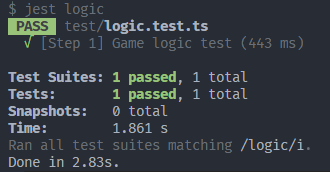

TypeScript 初探与游戏逻辑
实验目标
通过本 Step，我们希望你能够掌握基本的 TypeScript 语法并且能够使用 TypeScript 语言编写完成康威生命游戏的核心逻辑。
实验步骤
你需要在 src/utils/logic.ts 文件的函数 stepBoard 之中，注释 // Step 1 BEGIN 与 // Step 1 END 之间的部分填充你的代码，编写完成康威生命游戏的核心逻辑。
本 Step 的代码量大约为 20 - 40 行。
在编写完成后，你可以在项目根目录下，运行命令 yarn test step 执行我们编写好的单元测试，如果显示下述提示信息则代表你完成了 Step 1：

如果你在编写游戏的核心逻辑上遇到了困难，可以打开 src/tests/step.test.ts 文件，其中的 stepBoardGT 函数是我们提供的样例实现，也是最后评分所使用的对拍基准实现，可供本 Step 的参考。
代码说明
在 src/utils/types.ts 文件中，我们规定了表示棋盘的类型如下：
| export type Board = (0 | 1)[][];
|
这说明我们使用一个二维数组表示棋盘，二维数组中的每一个元素代表一个细胞，元素的取值为 0 或者 1，分别代表细胞死亡与细胞存活。
你需要填充的 stepBoard 函数接收一个 Board 类型的参数 board，其表示这个时刻的棋盘状态。该函数的返回值为 Board 类型，其表示下一时刻的棋盘状态。
在完成本 Step 的时候可以使用在 src/constants/constants.ts 文件中定义的常量，如描述棋盘尺寸的常量：
| export const BOARD_LENGTH = 50;
|
实验评分
本 Step 总分为 10 分。
本 Step 采用自动化评分。我们会检查 Tsinghua Git CI 中是否如下显示本 Step 的通过信息。若有，则你获得本 Step 所有分数：
【TODO：CI 通过界面】
我们保证 CI 判定通过的方式与你本地完全一致（即通过 yarn test step 命令判定）。
知识讲解
详细的 TypeScript 语法可以参考 TypeScript 的官方语法文档。作为已经有一定 C/C++ 语言基础的计算机系同学，可以参考较为简略的 计算机系科协技能引导文档 TypeScript 部分。
如果你只想快速上手本作业，并不想完整学完 TypeScript 语法后再完成作业，这里我们提供一个更简略的 TypeScript Cheatsheet。
| const caption: string = "This is a string"; // 声明一个字符串类型的常量
let val: number = 1; // 声明一个数字类型的变量
val = 2; // 给变量 val 赋予新值
val = "A string"; // ERROR! 不能给变量赋予不符合其类型声明的值
caption = "This is another string"; // ERROR! 不能修改常量
const oneValue: 1 = 1; // 可以使用字面量作为类型标注
const foo: number | string = "Maybe string"; // 可以用 | 运算符实现联合类型
const templateStr: string = `An example: ${val + 1}`; // 模板字符串，用反引号标记，用 ${} 标记需要嵌入字符串的变量
|
1
2
3
4
5
6
7
8
9
10
11
12
13
14
15
16
17
18 | // 一般的运算符与 C++ 语法近似
1 > 2; // false
1 <= 4; // true
1 + 3 > 2; // true
// 判定相等和不相等务必使用 === 和 !== 以防止意料外的类型转换
1 == true; // true
1 === true; // false
// 控制流的写法与 C++ 语法近似
const foo: number = 3;
if (foo !== 2) {
console.log("foo is not 2");
}
for (let i = 0; i < 10; ++i) {
console.log(`Now, i is ${i}`);
}
|
1
2
3
4
5
6
7
8
9
10
11
12
13
14
15
16
17
18 | const arr: number[] = [1, 2, 3, 4]; // 在类型后面加上 [] 表示这个类型的值构成的数组
const mat: number[][] = [[1, 2], [3, 4]]; // 二维数组则如此表示
const tuple: [number, string] = [1, "TS"]; // 元组则如此表示
// 接口可以用来作为对象的类型标记
// TS 中对象指的是键值对的组合，类似于 Python 的字典
interface Bar {
foo: number;
bar: string;
foobar: number[];
}
// 由某一个接口标记的对象中每一个键值对都需要符合接口的约束
const barfoo: Bar = {
foo: 1,
bar: "Test string",
foobar: [1, 2, 3],
};
|
另外一定要注意在访问数组或者对象的内部元素的时候可能出现的 undefined：
| const arr: number[] = [1, 2, 3, 4];
arr[0]; // 1
arr[100]; // undefined
const obj: any = {
foo: 1,
bar: "bar",
};
obj.foo; // 1
obj.barbar; // undefined
|
| // 最为经典的声明函数的方式
function sum(x: number, y: number): number {
return x + y;
}
// 箭头函数，另外一种声明函数的方式，与经典方法基本类似
const sum = (x: number, y: number): number => {
return x + y;
}
|
这里涉及到回调模式这一在 JavaScript 中得到广泛应用的模式，这一模式的介绍可以参考 技能引导文档的介绍。
| const arr: number[] = [1, 2, 3, 4, 5];
arr.forEach((val, ind) => {
console.log(`The value at index ${ind} is ${val}.`);
}); // 遍历数组，回调函数第一个参数是数组的值，第二个参数是数组下标
arr.map((val) => val * val); // 映射数组，该语句得到 [1, 4, 9, 16, 25]
arr.filter((val) => val % 2 === 0); // 筛选数组，该语句得到 [2, 4]
arr.push(6); // 在尾部添加元素
arr; // [1, 2, 3, 4, 5, 6]
|
TypeScript 中的 OOP 语法与 C++ 中的类似，这里给出一个例子，覆盖了声明类成员和访问权限、声明构造函数、声明成员函数和静态方法等基本语法。
1
2
3
4
5
6
7
8
9
10
11
12
13
14
15
16
17
18
19
20
21 | class Complex {
private real: number;
private imaginary: number;
constructor(_real: number, _imaginary: number) {
this.real = _real;
this.imaginary = _imaginary; // Declare members & initialize
}
print() {
console.log(`${this.real} ${this.imaginary >= 0 ? "+" : "-"} ${Math.abs(this.imaginary)} i`);
}
static printInfo() {
console.log("This is a complex class.");
}
}
let com = new Complex(1, 2);
com.print(); // "1 + 2 i"
Complex.printInfo(); // "This is a complex class."
|
最后更新:
2023年1月15日
{kind=link}